En este capítulo se realiza el Análisis Exploratorio de Datos (EDA) del conjunto de datos de factores de riesgo de cáncer.
Los objetivos principales son:
Entender cómo se distribuyen las variables más relevantes (análisis univariado).
Explorar relaciones entre factores de riesgo y medidas de salida (Overall_Risk_Score, Risk_Level) (análisis bi/multivariado).
Detectar posibles problemas de calidad y características del dataset que puedan afectar a los modelos posteriores (desbalance de clases, valores extremos, etc.).
El análisis combina tablas, gráficos y comentarios en lenguaje natural, siguiendo la filosofía de “¿qué nos dicen los datos?” trabajada en la asignatura.
En el capítulo de comprensión de los datos ya se vio que el dataset contiene 2.000 registros y alrededor de 20 variables. Aquí se parte de esos mismos datos para profundizar en sus patrones.
4.3 3. Análisis univariado de variables numéricas
4.3.1 3.1. Resumen estadístico general
Mostrar/Ocultar código
cancer %>%select(all_of(variables_numericas)) %>%summary()
Age Gender Smoking Alcohol_Use
Min. :25.00 Min. :0.000 Min. : 0.000 Min. : 0.000
1st Qu.:56.00 1st Qu.:0.000 1st Qu.: 2.000 1st Qu.: 2.000
Median :64.00 Median :0.000 Median : 5.000 Median : 5.000
Mean :63.25 Mean :0.489 Mean : 5.157 Mean : 5.035
3rd Qu.:70.00 3rd Qu.:1.000 3rd Qu.: 8.000 3rd Qu.: 8.000
Max. :90.00 Max. :1.000 Max. :10.000 Max. :10.000
Obesity Family_History Diet_Red_Meat Diet_Salted_Processed
Min. : 0.000 Min. :0.0000 Min. : 0.000 Min. : 0.000
1st Qu.: 4.000 1st Qu.:0.0000 1st Qu.: 3.000 1st Qu.: 2.000
Median : 6.000 Median :0.0000 Median : 5.000 Median : 4.000
Mean : 5.968 Mean :0.1945 Mean : 5.189 Mean : 4.564
3rd Qu.: 9.000 3rd Qu.:0.0000 3rd Qu.: 8.000 3rd Qu.: 7.000
Max. :10.000 Max. :1.0000 Max. :10.000 Max. :10.000
Fruit_Veg_Intake Physical_Activity Air_Pollution Occupational_Hazards
Min. : 0.000 Min. : 0.000 Min. : 0.000 Min. : 0.000
1st Qu.: 3.000 1st Qu.: 1.000 1st Qu.: 3.000 1st Qu.: 2.000
Median : 5.000 Median : 4.000 Median : 5.000 Median : 5.000
Mean : 4.928 Mean : 4.015 Mean : 5.323 Mean : 4.979
3rd Qu.: 8.000 3rd Qu.: 6.000 3rd Qu.: 8.000 3rd Qu.: 8.000
Max. :10.000 Max. :10.000 Max. :10.000 Max. :10.000
BRCA_Mutation H_Pylori_Infection Calcium_Intake Overall_Risk_Score
Min. :0.0000 Min. :0.0000 Min. : 0.000 Min. :0.02928
1st Qu.:0.0000 1st Qu.:0.0000 1st Qu.: 1.000 1st Qu.:0.36698
Median :0.0000 Median :0.0000 Median : 4.000 Median :0.45540
Mean :0.0325 Mean :0.1965 Mean : 3.941 Mean :0.45445
3rd Qu.:0.0000 3rd Qu.:0.0000 3rd Qu.: 6.000 3rd Qu.:0.53978
Max. :1.0000 Max. :1.0000 Max. :10.000 Max. :0.85216
BMI Physical_Activity_Level
Min. :15.00 Min. : 0.000
1st Qu.:23.50 1st Qu.: 2.000
Median :26.20 Median : 5.000
Mean :26.18 Mean : 4.939
3rd Qu.:28.70 3rd Qu.: 8.000
Max. :41.40 Max. :10.000
Este resumen confirma rangos razonables para las variables numéricas y permite detectar rápidamente valores mínimos/máximos y posibles outliers.
4.3.2 3.2. Histogramas de variables seleccionadas
Se analizan tres variables numéricas clave: Age, BMI y Overall_Risk_Score.
Comentario: La distribución de la edad se concentra principalmente entre los 45 y 80 años, con un pico alrededor de los 60–65 años. Hay muy pocos pacientes por debajo de los 40 años. Esto indica que el dataset representa sobre todo a población adulta de mediana y avanzada edad, algo coherente con el hecho de que el riesgo de cáncer suele aumentar con la edad.
Comentario: El BMI presenta una distribución aproximadamente en forma de campana, centrada en valores de 25–30. La mayoría de los pacientes se sitúa, por tanto, en rangos de sobrepeso u obesidad ligera, con pocos casos de BMI muy bajo o muy alto. Este patrón es coherente con un escenario en el que el exceso de peso es un factor de riesgo frecuente en la población.
4.3.2.3 3.2.3. Score de riesgo global (Overall_Risk_Score)
Distribución del score de riesgo global (Overall_Risk_Score).
Comentario: La variable Overall_Risk_Score tiene una distribución aproximadamente normal, centrada cerca de 0,5 y con la mayoría de valores entre ~0,3 y 0,7. Esto sugiere que el dataset está construido de forma que la mayoría de pacientes tienen un riesgo intermedio, con pocos casos en los extremos de riesgo muy bajo o muy alto.
4.4 4. Análisis univariado de variables categóricas
En esta sección se exploran las distribuciones de algunas variables categóricas relevantes:
Risk_Level
Smoking
Alcohol_Use
Physical_Activity
Family_History
4.4.1 4.1. Tablas de frecuencias
Mostrar/Ocultar código
frecuencias <- cancer %>%select(Risk_Level, Smoking, Alcohol_Use, Physical_Activity, Family_History) %>%lapply(table)frecuencias
A partir de estas tablas se observan, por ejemplo:
Risk_Level está claramente desbalanceada:
La categoría Medium concentra la gran mayoría de los casos.
Low tiene una proporción menor.
High representa solo una pequeña fracción (unos 100 casos de 2.000, es decir, en torno al 5%).
Family_History tiene muchos más pacientes sin antecedentes (0) que con antecedentes (1).
Smoking, Alcohol_Use y Physical_Activity se codifican en niveles 0–10, cubriendo un amplio rango de intensidad/ frecuencia.
4.4.2 4.2. Gráficos de barras
4.4.2.1 4.2.1. Nivel de riesgo (Risk_Level)
Mostrar/Ocultar código
cancer %>%mutate(Risk_Level =as.factor(Risk_Level)) %>%ggplot(aes(x = Risk_Level)) +geom_bar() +labs(x ="Risk_Level", y ="Número de pacientes") +theme_minimal()
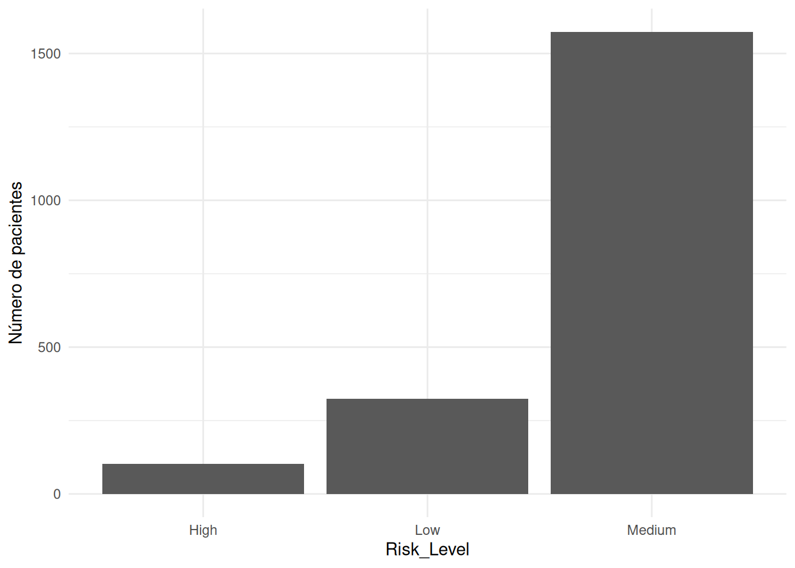
Distribución del nivel de riesgo (Risk_Level).
Comentario: La categoría Medium domina claramente el gráfico, seguida por Low y, en mucha menor medida, High. Esto confirma que el nivel de riesgo categórico está muy desbalanceado, algo que será importante tener en cuenta cuando se construyan modelos de clasificación, ya que la clase minoritaria (alto riesgo) podría ser más difícil de aprender.
4.4.2.2 4.2.2. Tabaquismo (Smoking)
Mostrar/Ocultar código
cancer %>%mutate(Smoking =factor(Smoking, levels =sort(unique(Smoking)))) %>%ggplot(aes(x = Smoking)) +geom_bar() +labs(x ="Smoking", y ="Número de pacientes") +theme_minimal()
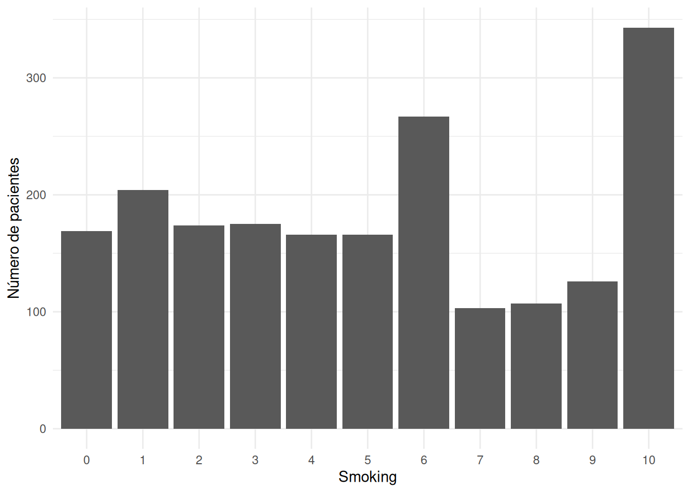
Distribución de los niveles de tabaquismo (Smoking).
Comentario: La variable Smoking (0–10) presenta pacientes repartidos a lo largo de toda la escala, con una presencia apreciable tanto en niveles bajos como en niveles medios y altos. Esto indica que el dataset contiene patrones de consumo muy variados, desde no fumadores hasta fumadores intensivos, lo que resulta interesante para estudiar cómo cambia el riesgo con el tabaquismo.
4.4.2.3 4.2.3. Consumo de alcohol (Alcohol_Use)
Mostrar/Ocultar código
cancer %>%mutate(Alcohol_Use =factor(Alcohol_Use, levels =sort(unique(Alcohol_Use)))) %>%ggplot(aes(x = Alcohol_Use)) +geom_bar() +labs(x ="Alcohol_Use", y ="Número de pacientes") +theme_minimal()
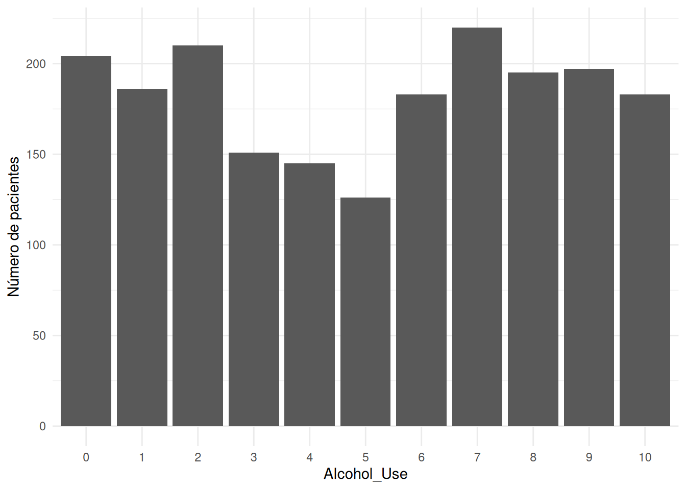
Distribución de los niveles de consumo de alcohol (Alcohol_Use).
Comentario: El consumo de alcohol también se distribuye a lo largo de los distintos niveles 0–10, sin una única categoría claramente dominante. Esto sugiere que en el dataset coexisten distintos patrones de consumo, lo que permitirá analizar cómo se asocia cada rango con el score de riesgo y con el nivel de riesgo categórico.
cancer %>%mutate(Physical_Activity =factor(Physical_Activity, levels =sort(unique(Physical_Activity)))) %>%ggplot(aes(x = Physical_Activity)) +geom_bar() +labs(x ="Physical_Activity", y ="Número de pacientes") +theme_minimal()
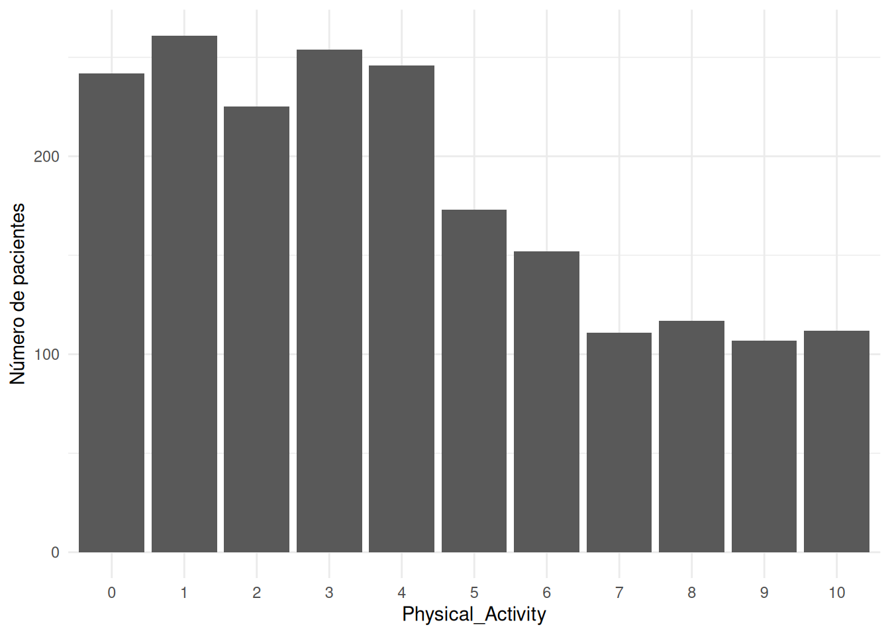
Distribución de los niveles de actividad física (Physical_Activity).
Comentario: Los niveles más frecuentes de Physical_Activity corresponden a valores bajos o intermedios, mientras que los niveles más altos son menos frecuentes. Desde el punto de vista de prevención, esto refleja un predominio de estilos de vida poco activos, lo que puede contribuir a un mayor riesgo global.
4.5 5. Análisis bivariado
En esta sección se exploran relaciones entre variables numéricas y entre variables numéricas y categóricas.
4.5.1 5.1. Relaciones numérica vs. numérica
4.5.1.1 5.1.1. Age vs Overall_Risk_Score
Mostrar/Ocultar código
ggplot(cancer, aes(x = Age, y = Overall_Risk_Score)) +geom_point(alpha =0.4) +geom_smooth(method ="loess", se =FALSE) +labs(x ="Edad", y ="Overall_Risk_Score") +theme_minimal()
`geom_smooth()` using formula = 'y ~ x'
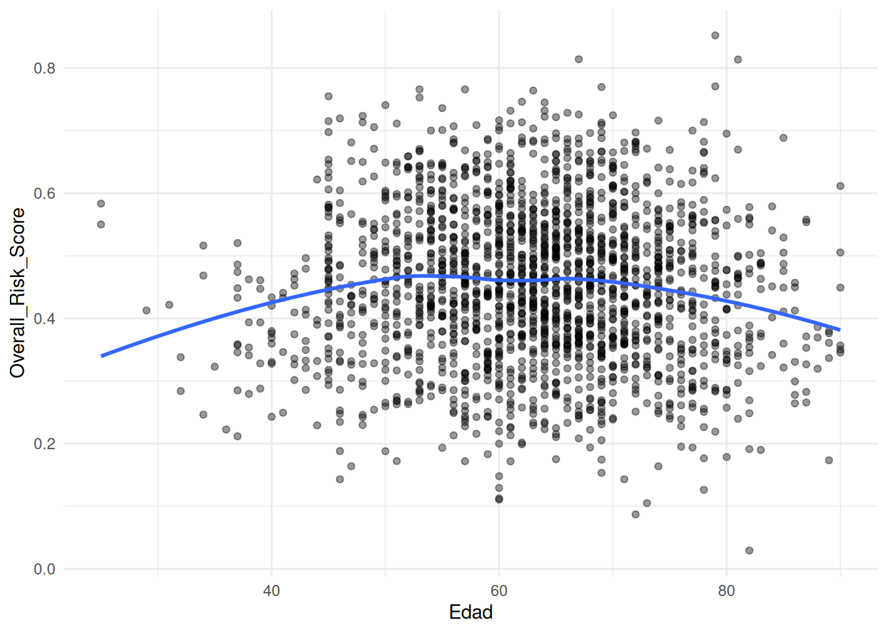
Relación entre edad (Age) y score de riesgo (Overall_Risk_Score).
Comentario: La nube de puntos está bastante dispersa y la curva de suavizado (loess) apenas muestra una tendencia marcada. Se aprecia, como mucho, una ligera variación del riesgo en edades medias, pero en general la edad por sí sola no explica gran parte de la variabilidad del score de riesgo en este dataset sintético.
4.5.1.2 5.1.2. BMI vs Overall_Risk_Score
Mostrar/Ocultar código
ggplot(cancer, aes(x = BMI, y = Overall_Risk_Score)) +geom_point(alpha =0.4) +geom_smooth(method ="loess", se =FALSE) +labs(x ="BMI", y ="Overall_Risk_Score") +theme_minimal()
`geom_smooth()` using formula = 'y ~ x'
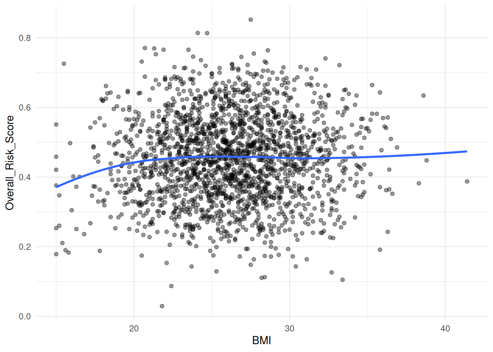
Relación entre BMI y score de riesgo (Overall_Risk_Score).
Comentario: En este caso también hay dispersión, pero la curva de suavizado muestra una tendencia ligeramente creciente: a medida que aumenta el BMI, el Overall_Risk_Score tiende a ser algo mayor. Aunque la relación no es muy fuerte, sí apunta en la dirección esperada desde el punto de vista epidemiológico: un mayor índice de masa corporal se asocia con un incremento del riesgo global.
4.5.2 5.2. Relaciones numérica vs. categórica
4.5.2.1 5.2.1. Overall_Risk_Score por nivel de riesgo (Risk_Level)
Mostrar/Ocultar código
cancer %>%mutate(Risk_Level =as.factor(Risk_Level)) %>%ggplot(aes(x = Risk_Level, y = Overall_Risk_Score)) +geom_boxplot() +labs(x ="Risk_Level", y ="Overall_Risk_Score") +theme_minimal()
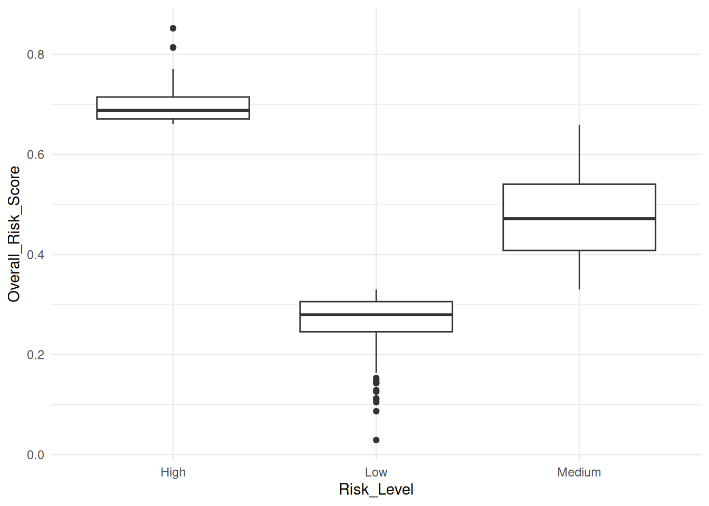
Distribución de Overall_Risk_Score según Risk_Level.
Comentario: Los boxplots muestran tres grupos claramente separados:
Para Low, los scores se concentran en torno a valores bajos (~0,25–0,30).
Para Medium, la mediana está en torno a ~0,45–0,50.
Para High, los valores se desplazan hacia la parte alta (~0,70 en adelante).
Hay algo de solapamiento entre cajas, pero en general el Overall_Risk_Scoreaumenta de forma consistente al pasar de Low a Medium y de Medium a High, lo que valida la coherencia interna del dataset: la variable continua de riesgo y la categórica de nivel de riesgo están alineadas.
4.5.2.2 5.2.2. Overall_Risk_Score por tabaquismo (Smoking)
Mostrar/Ocultar código
cancer %>%mutate(Smoking =factor(Smoking, levels =sort(unique(Smoking)))) %>%ggplot(aes(x = Smoking, y = Overall_Risk_Score)) +geom_boxplot() +labs(x ="Smoking", y ="Overall_Risk_Score") +theme_minimal()
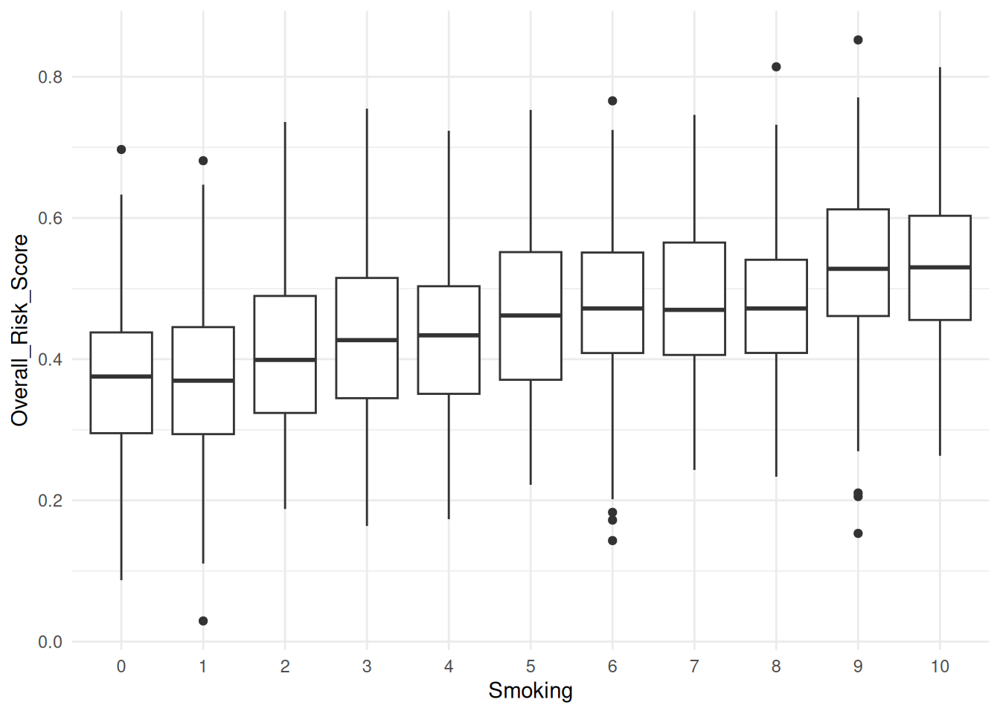
Distribución de Overall_Risk_Score según niveles de tabaquismo (Smoking).
Comentario: Al recorrer los niveles de Smoking de 0 a 10 se observa que:
Los niveles bajos tienden a tener medianas de riesgo algo menores.
A medida que aumenta el nivel de tabaquismo, las cajas se desplazan ligeramente hacia valores más altos de Overall_Risk_Score, aunque con bastante dispersión dentro de cada grupo.
En conjunto, los boxplots sugieren una asociación positiva moderada entre tabaquismo y riesgo global: más tabaquismo → ligeramente más riesgo, sin llegar a ser una relación determinista.
4.5.2.3 5.2.3. Overall_Risk_Score por consumo de alcohol (Alcohol_Use)
Mostrar/Ocultar código
cancer %>%mutate(Alcohol_Use =factor(Alcohol_Use, levels =sort(unique(Alcohol_Use)))) %>%ggplot(aes(x = Alcohol_Use, y = Overall_Risk_Score)) +geom_boxplot() +labs(x ="Alcohol_Use", y ="Overall_Risk_Score") +theme_minimal()
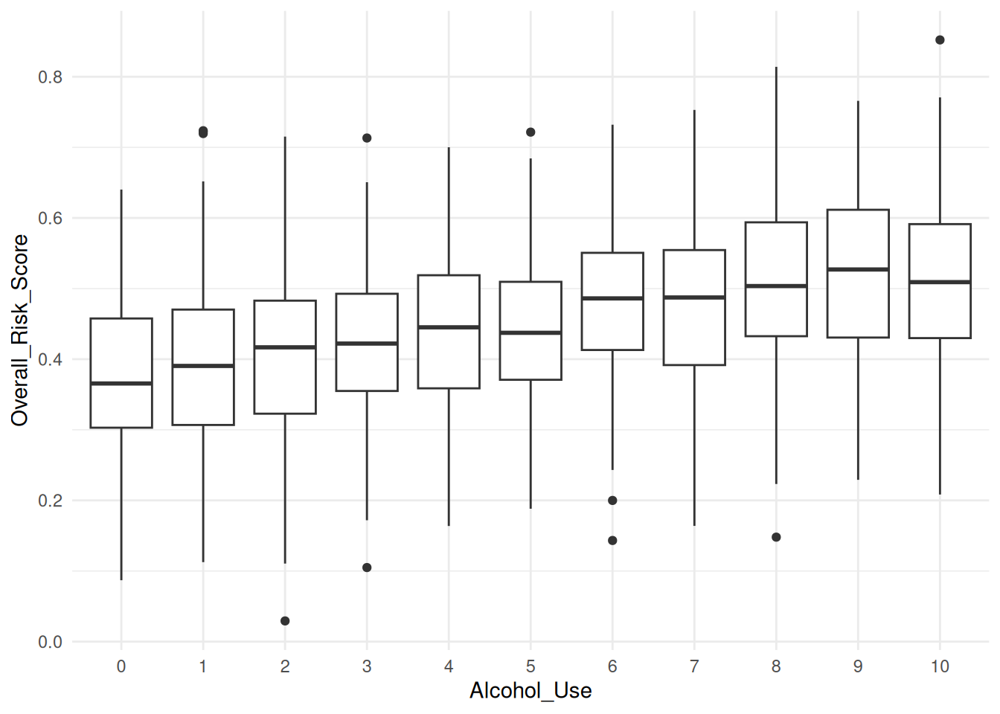
Distribución de Overall_Risk_Score según niveles de consumo de alcohol (Alcohol_Use).
Comentario: Los patrones para Alcohol_Use son similares a los de Smoking: a mayor nivel de consumo de alcohol, la distribución de Overall_Risk_Score tiende a situarse en valores algo más altos, aunque con variabilidad interna en cada nivel. Esto sugiere que el dataset refleja la idea de que un mayor consumo de alcohol se asocia con un riesgo global algo mayor, pero con la incertidumbre propia de un fenómeno multifactorial.
4.5.3 5.3. Distribución de Risk_Level según tabaquismo y consumo de alcohol
Para explorar cómo se reparte el nivel de riesgo según Smoking y Alcohol_Use, se utilizan gráficos de barras apiladas en proporciones.
4.5.3.1 5.3.1. Risk_Level por Smoking
Mostrar/Ocultar código
cancer %>%mutate(Smoking =factor(Smoking, levels =sort(unique(Smoking))),Risk_Level =as.factor(Risk_Level) ) %>%ggplot(aes(x = Smoking, fill = Risk_Level)) +geom_bar(position ="fill") +scale_y_continuous(labels = scales::percent) +labs(x ="Smoking", y ="Proporción", fill ="Risk_Level") +theme_minimal()
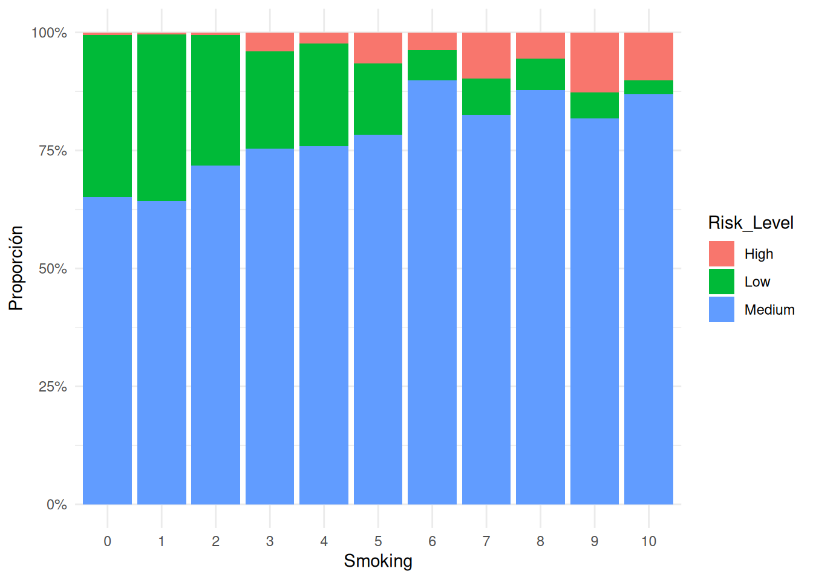
Proporción de niveles de riesgo (Risk_Level) según niveles de tabaquismo (Smoking).
Comentario: En este gráfico se aprecia que:
En los niveles bajos de Smoking predomina ampliamente el riesgo Medium, con una proporción moderada de Low y muy pocos casos de High.
A medida que aumenta el nivel de tabaquismo, la banda correspondiente a High (color rojo) se hace ligeramente más ancha, mientras que la de Low (verde) tiende a estrecharse.
Esto indica que, en este dataset, los niveles más altos de tabaquismo están asociados con una mayor proporción de pacientes de alto riesgo, aunque la categoría Medium sigue siendo mayoritaria en todos los niveles.
4.5.3.2 5.3.2. Risk_Level por Alcohol_Use
Mostrar/Ocultar código
cancer %>%mutate(Alcohol_Use =factor(Alcohol_Use, levels =sort(unique(Alcohol_Use))),Risk_Level =as.factor(Risk_Level) ) %>%ggplot(aes(x = Alcohol_Use, fill = Risk_Level)) +geom_bar(position ="fill") +scale_y_continuous(labels = scales::percent) +labs(x ="Alcohol_Use", y ="Proporción", fill ="Risk_Level") +theme_minimal()
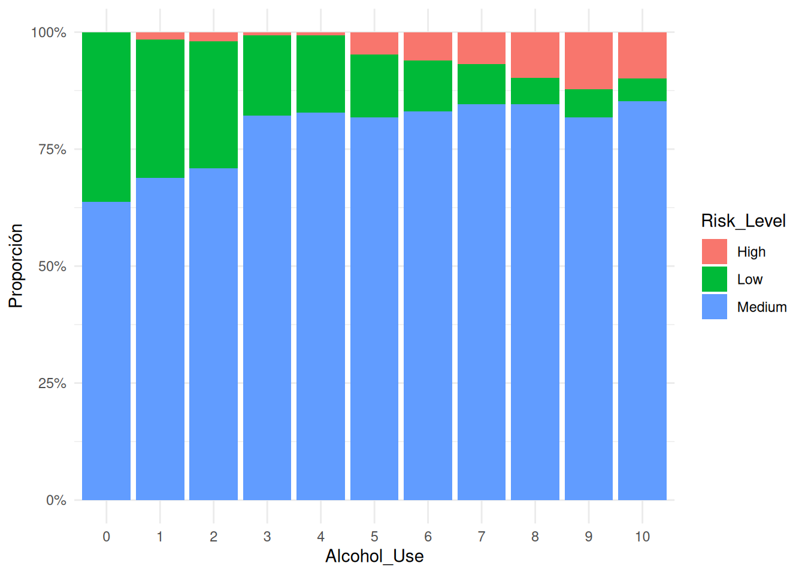
Proporción de niveles de riesgo (Risk_Level) según niveles de consumo de alcohol (Alcohol_Use).
Comentario: El patrón es similar al observado para Smoking:
En niveles bajos de consumo de alcohol, la mayor parte de los pacientes se clasifica como riesgo Medium y una fracción no despreciable como Low.
En niveles altos de Alcohol_Use, la proporción de casos High aumenta, mientras que la de Low disminuye.
De nuevo, esto refuerza la idea de que el dataset refleja una relación cualitativa razonable entre estilos de vida menos saludables (más tabaquismo, más alcohol) y un mayor nivel de riesgo.
4.6 6. Correlación entre variables numéricas
Como resumen de las relaciones entre variables numéricas, se visualiza una matriz de correlación para algunas variables seleccionadas.
Mostrar/Ocultar código
vars_num_seleccionadas <-c("Age", "Air_Pollution", "BMI", "Overall_Risk_Score")datos_num <- cancer %>%select(all_of(vars_num_seleccionadas)) %>%drop_na()matriz_cor <-cor(datos_num)matriz_cor_df <-as.data.frame(matriz_cor) %>%mutate(var1 =rownames(matriz_cor)) %>%pivot_longer(cols =-var1,names_to ="var2",values_to ="correlacion" )ggplot(matriz_cor_df, aes(x = var1, y = var2, fill = correlacion)) +geom_tile() +scale_fill_gradient2(limits =c(-1, 1),midpoint =0 ) +labs(x ="", y ="", fill ="Correlación") +theme_minimal() +theme(axis.text.x =element_text(angle =45, hjust =1))
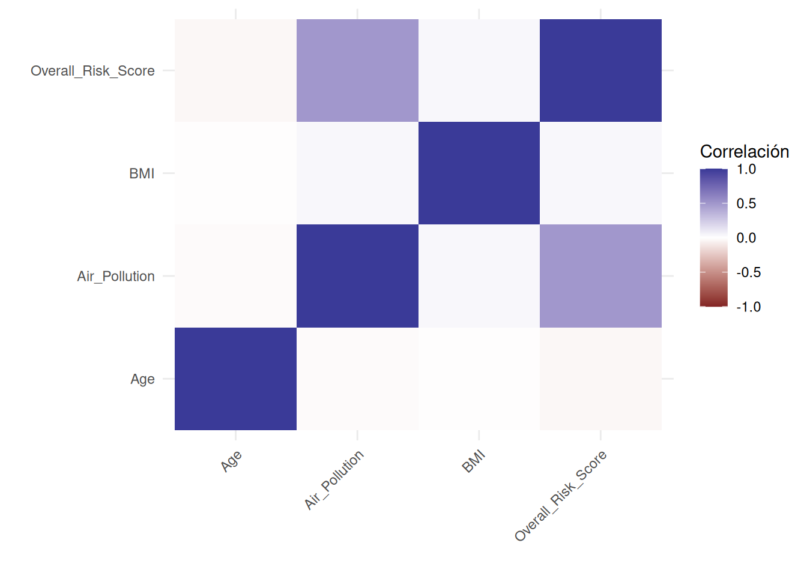
Matriz de correlación entre variables numéricas seleccionadas.
Comentario: La matriz muestra, de forma cualitativa, que:
Overall_Risk_Score guarda correlaciones positivas moderadas con algunas variables como BMI y Air_Pollution.
La correlación con Age parece más débil.
No se observan correlaciones extremadamente altas (cercanas a 1 en valor absoluto) entre las variables seleccionadas.
Esto sugiere que, al construir modelos, es poco probable que haya problemas graves de colinealidad entre estas variables numéricas, aunque será conveniente revisarlo con más detalle en la fase de modelado.
4.7 7. Resumen del análisis exploratorio
A partir del EDA realizado se pueden extraer las siguientes ideas principales:
Perfil de la población del dataset
Predominan pacientes adultos de mediana y avanzada edad (45–80 años).
La mayoría presenta valores de BMI en rango de sobrepeso u obesidad moderada.
Distribución del riesgo
El Overall_Risk_Score se distribuye de forma aproximadamente normal alrededor de 0,5, indicando un predominio de niveles de riesgo intermedio.
La variable categórica Risk_Level está desbalanceada, con muchos casos en Medium, menos en Low y pocos en High.
Hábitos y estilo de vida
Las variables Smoking, Alcohol_Use y Physical_Activity cubren un abanico amplio de niveles (0–10), con un número apreciable de pacientes en niveles medios y altos de tabaquismo y consumo de alcohol, y niveles bajos/intermedios de actividad física.
Relaciones entre factores y riesgo
Age muestra poca relación directa con Overall_Risk_Score en este dataset sintético.
BMI, Smoking y Alcohol_Use presentan relaciones positivas moderadas con el score de riesgo y con la proporción de casos de alto riesgo.
Los boxplots de Overall_Risk_Score por Risk_Level indican una coherencia interna clara: el score aumenta al pasar de Low a Medium y de Medium a High.
Correlaciones numéricas
No se observan correlaciones excesivamente altas entre las variables numéricas analizadas, lo que es una buena señal para el posterior uso conjunto en modelos.
En conjunto, el EDA muestra que el dataset de Cancer Risk Factors está construido de forma coherente y razonable desde el punto de vista estadístico y epidemiológico: los factores de estilo de vida menos saludables se asocian con niveles de riesgo más altos, y las variables continua y categórica de riesgo (Overall_Risk_Score y Risk_Level) están alineadas.
Estos resultados proporcionan una base sólida para avanzar hacia las fases de modelado, evaluación y segmentación de perfiles de riesgo que se abordarán en la siguiente parte del proyecto.